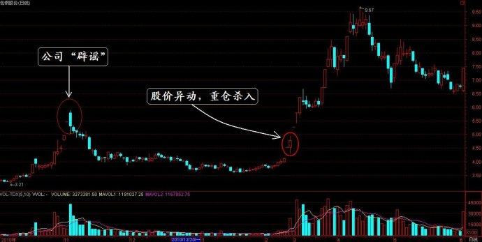

第280篇•谁说中国股市没有英雄？
谷为陵
对于我写不写这篇博文，我想了一整天，最终我还是决定写了。我记得韩志国前不久说过，中国股市没有英雄。他的意思是，A股长期处于牛短熊长，且上市公司质量很差，不管是投资者，还是投机者，都很难获得长期成功。即使有极少数赚大钱的，也主要是凭运气。他的话虽然偏激一些，但于事实还是不错的，确实，在这个市场上，完全依靠投资或者投机技巧而获得长期高收益，且没有任何道德诟病的，还真的是很少见的。
什么是股市英雄？就是某些草根人物，拿着并不多的本金，完全依靠自己的投资和投机技巧，在完全合法、合规的情况下，通过抓住市场机会而获得长期高收益，最终成为投资界的亿万富翁、十亿以上的富豪！这样的英雄人物，到底有木有？这个，还真的有。我今天就隆重给大家介绍一位。
我昨天参加了东方证券北京学院路营业部的一个高端研讨会。该营业部最近成立了一个“青杏证券实战研究会”，专门组织顶尖高手研讨实战理念和技法，并定期举行活动，很有特色。这个研究会“青杏”两字，就是分别取自于两位投资高手的名字中的两个字，其中，“青”字，就是取自于传奇式的投资高手——陈大姐的名字中的一个字。
我以前说过，在这个市场，有很多高手是隐形的，是别人看不见的，陈大姐就是这样的一个人，我在前面还介绍过她。她为人极其低调，平时很少去营业部，开户也是手下人去，她根本不露面，投资界认识她的人并不多。
陈大姐以前是干实业的，干得还很成功。她在2000年时，看着股票还好赚钱，就拿出了1000万元，委托给了那个曾经非常著名的“咬定青山不放松”的股评家，结果给赔了个唏哩哗啦，基本上是血本无归。陈大姐是个不服输的人，她当时不懂股票，但赔了钱后，她就要搞清楚，炒股为什么会陪得这样惨，于是，她就潜心钻研股票。到了2003年，她觉得自己已经基本上搞明白了，就将自己的公司变卖了1000万，她就拿着这1000万，自己踏进了股市。
期间的过程我就不再赘述，我就直说结果吧。现在陈大姐的身家应该在10亿以上，且管理者20亿元的委托资金。这已经够让人称奇的了吧，但更让人惊异的是她的投资能力。
她在2007年10月，就从股市撤走了全部资金，随即将部分钱投入了黄金期货。前两年，她大战中小板，赚了个盆满钵满。去年4月，我们在一起聊天的时候，她就说股市暂时不能玩了，她要长期做空股指期货。这两年，股民们在股市里赔得惨不忍睹，但陈大姐做空股指期货却又赚翻了。
大家以为我是在编故事，说笑话吗？我说得句句是真。去年，由于股市不好，陈大姐将部分资金转战期货市场，她操作的所有期货帐户的盈利情况，简直让人不敢相信。在这些帐户中，盈利最高的达到了6～7倍，盈利最少的也有200%。
昨天，陈大姐当着我们十几个人的面，做出了一个让我们瞠目结舌的决定：她要向我们公开两个期货操作帐户，依照这几年她的月均收益率情况，她认为，这两个帐户应该可以获得20%以上的月均收益率。这两个帐户公开期限为半年，我们共同监督她的操作。在这样的市道敢放言做到20%的月均收益率，我看全中国除了陈大姐，谁还敢这样叫板？
陈大姐此举目的何在呢？她是为了炫耀她的高超的、有点神乎其技的投资能力吗？非也。她是想借此举将“青杏证券实战研究会”这块牌子打响。她说，研究会，研究来研究去，若没有实实在在的业绩，那有什么用？只有响当当的业绩，才能够让别人服气。所以，她就想出了这个办法。若不是陈大姐已经当着众人的面说出这样的话，我怎敢在博客里谈论她的事情呢？
陈大姐虽然年纪不小了，但思维极其活跃，看问题极其敏锐，说话语速极快。通过我与她的多次长谈，我发现她是一个足以和李佛摩尔比肩的超级交易奇才，在有些方面甚至还要超过李佛摩尔。她能够在股市、期市获得这样的成功，主要依靠三个法宝：
一是敏锐的感觉，她的市场感觉超常，对于市场机会的捕捉能力让人叹为观止。比如，2011年2月18日她抓包钢股份的案例，就堪称经典。包钢股份曾在2010年11月初突然走出两个涨停板，但随后公司公告，说在未来三个月内公司没有重大重组、资产注入等计划，随后股价就一路下跌。绝大多数投资者也许认为包钢股份的这轮暴涨暴跌就算结束了，这无非是一出闹剧而已，但陈大姐却不这样看。她认为，当时稀土正是热得烫手的时候，而包钢股份与稀土离得这样近，该股的一举一动都会让投资者联想到稀土的问题，这次的一个不明不白的传闻，就让这只股票走出了两个几乎是一字涨停板，那么，在三个月后，假若该股真的有些什么动作，那么，该股的股价还不飞了吗？于是，在其后的三个月里，她就一直关注该股的一切动向，按她的话说，“是查看该股的任何蛛丝马迹”。结果，在三个月后的2011年2月17日，该股突然开盘就被巨量封死涨停板。对于一个总股本64亿股的超级大盘股来说，一开盘就被被封死涨停板，这绝对不是什么正常的行为。由于陈大姐天天盯着这只股票，所以，对于该股的这种异动，她觉察到一定有什么事情要发生，否则该股不会出现这样的走势。她对于该股进行了迅速的评估，她认为该股经过前期的深幅调整后，股价现在处于底部，风险并不大，假若有朦胧的利好刺激，股价的上涨空间应该较大，于是，她就在当天以及第二天大举杀入。结果，该股在一个月内就翻了一倍。下面是该股当时的走势图：

二是拥有先进的交易系统。陈大姐是一个全品种的操作能手，她投资的范围涵盖股票、商品期货以及外汇市场。做期货有两种主流方法：一是靠人交易，这是最传统的方法，但这种方法需要人每时每刻盯盘，劳动强度很大，且难以应付多品种的操作；二是靠计算机交易，此所谓高频交易，在设好交易程序后，计算机能够自动交易，每秒钟可以交易几十笔甚至上百笔，这是一种全自动的交易系统。但高频交易的一个缺陷是，计算机不能识别大的趋势，往往会即时获利了结，而错失大的波段。陈大姐通过多年的交易实践，逐渐摸索出了自己的独特交易系统——半自动化交易系统。陈大姐让计算机先去发现可交易信号，但对于重大的趋势性的机会，她会截留下来自己操作，这样做的好处是，既可以让计算机抓住很多小的交易机会，又能够从中滤出某些重大的交易机会，得以重仓出击，放大收益。
三是拥有与众不同的投资理念。总体来看，陈大姐是一个相反理论的实践者。在别人普遍看多的时候，她就会反其道而行之而看空。比如，在2007年10月，有好多基金经理和她说，股市要涨到万点，她只是一笑置之，并加快了平仓速度。她认为，看多的人越多，她越害怕。她说，好多做期货的人有个习惯，是周末和节假日不持仓，她却偏偏反做，经常持仓过周末和节假日，结果还总是她对。由于陈大姐有过惨痛的教训，所以，她对于风险控制格外严格，不允许任何过度冒险行为。她虽然在期货上赚了大钱，但她非常清醒，在赚钱后，头脑绝不发热，其中最重要的一点，就是不能过度放大杠杆。这么多年来，她总是有个习惯，将期货赚到的钱，抽出来一些放到一边，等待其它机会。
说到未来，陈大姐简直是心花怒放。她说，期货市场还有更大的发展，不久国债期货、原油期货、玻璃期货等都要开了，期货市场的规模还要继续扩大，期货的黄金期就要到来了。另外，股市现在还跌跌不休，再跌下去，股市的大机会也会来了，她希望股市能够快点跌到位，别在这里磨人。在绝大多数投资者眼里，现在到处是血雨腥风、惨淡愁云，而在陈大姐眼里，却到处是机会，天天有赚不完的钱。
也许，投资大师就是与众不同的人。1974年，美国因受滞涨所累，股市深陷熊市。《福布斯》杂志的记者问巴菲特：“你觉得目前的股市如何？”巴菲特笑答：“我的感觉就像一个性欲强烈的男人到了妓院一样！”他还说，便宜的好公司太多了，他只恨自己的资金不够。
陈大姐是一个很热心也很有爱心的人，她对我们说，她以后要做一件事情，就是帮穷人理财。她说富人本身有钱，自己又都会赚钱，不需要她打理，而穷人没有多少钱，还不会理财，所以，她想帮他们。我们建议她以后可以在这个营业部发行基金，以让更多的人能够获得她的帮助。
我认为，不管是陈大姐的非凡投资战绩，还是她公开帐户的勇气，抑或是她的仁心大爱，她都够得上是股市的英雄。巾帼不让须眉，倒让我们这些男人感到汗颜。